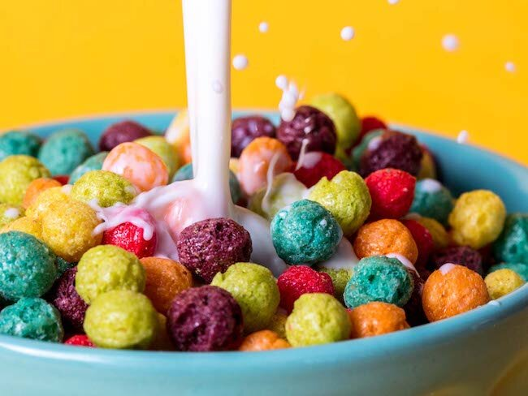

How to make seriously cerealy cereal

Delicious and colourful cereal
Ingredients
Cereal
Milk
Steps
Pour out some milk into a bowl
Dump it, pour the cereal in first you PSYCHO!
Then douce the cereal as you pour that creamy milk over it. Mmm mmm mmmmmm